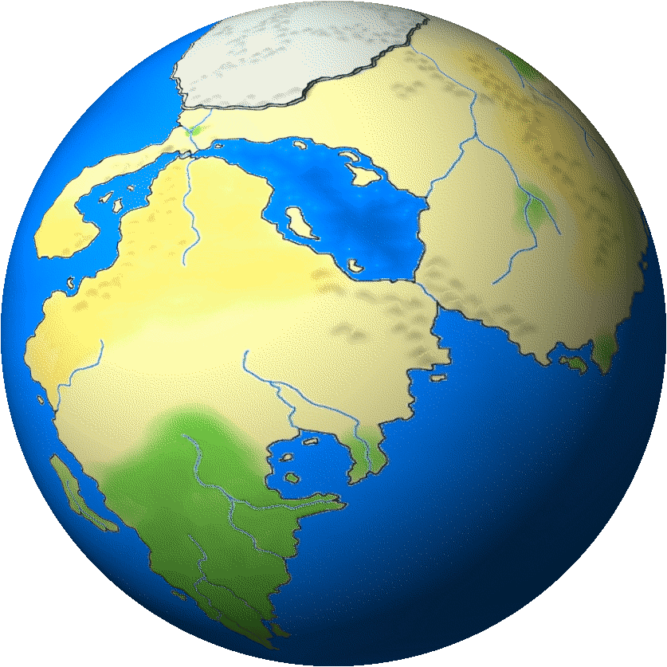

Leyenda
Add Data
Capas añadidas
Ninguna capa agregada.
Consultas y Geoprocesamiento
📐 Consultas avanzadas
Distancia más corta a capas del portal
Puntos, líneas y polígonos se miden desde su borde hasta el borde más cercano de la capa evaluada.
📋 Tabla de Información Cruzada
0 registros